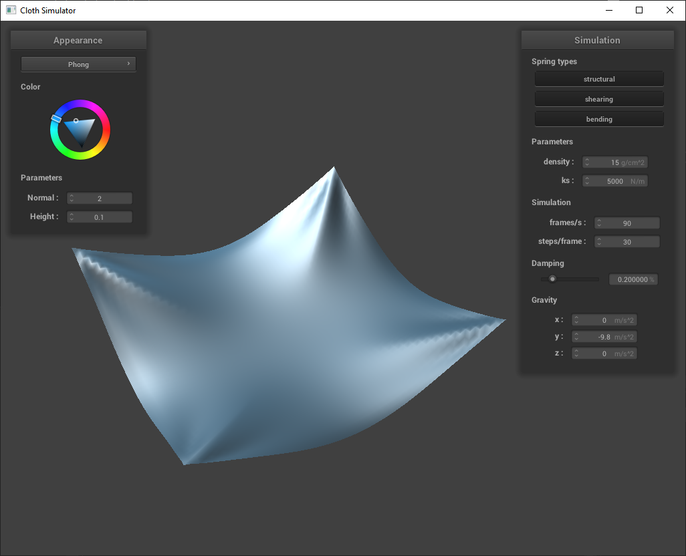

Abstract
We created a simulation of a strandbeest walking along a beach. We primarily focused on simulating the physical joints of the strandbeest, rigging of our model, and the visual rendering of the sand and sky.
Technical Approach
Physics Simulation
We implemented a system for simulating linkages using a reduced coordinate formulation which uses a set of generalized coordinates equal in number to the degrees of freedom of the system. We used this reduced coordinate formulation to physically simulate a strandbeest that realistically responds to external forces and collisions. We then placed this strandbeest in a desert to give it an environment to walk through. The desert involves procedurally generated dunes and a sand and skybox shader which features glittering and clouds. Our physics simulator is based on Lagrangian mechanics. Our system was implemented on top of hw4.
In particular, we picked the crankshaft angle as our single generalized coordinate and simulated the beest in a reference frame centered on its center of mass and rotating with the beest. Our system is general to any linkage and requires three things: The linkage definition described as points and joints. a resolution function which takes in generalized coordinates and outputs the positions of enough points to completely determine the system and a resolution order which defines the order in which to calculate the positions of the remaining points. In the future, we hope to automate these latter two processes using graph traversal algorithms, which automatically calculate the remaining degrees of freedom of each point.
By using a reference frame centered on the strand beast, we can ignore translation and rotation, reducing our degrees of freedom from 7 to 1. We can reintroduce the effects of our non-inertial reference frame using the fictitious centrifugal, Coriolis, and Euler forces. Fictitious and external forces are represented by a potential energy gradient in the position of the corresponding point mass. describe the solution The extrinsic coordinates are calculated using conservation of momentum. Extrinsic translational momentum is updated as if all external forces had been applied to the center of mass. We update the extrinsic angular momentum such that the total angular momentum is conserved. This effectively applies an Euler force which explains any change in internal angular momentum. After calculating the state evolution based on internal dynamics, we update the position of each point and check for collisions. Since our desert is represented by a height map, we can easily find the triangle directly below each point and check if the point is on the top side of it. describe lagrange multiplier solver explain why this does blow up for small dt Finally, we apply friction by applying a force opposing the velocity of all colliding points. The magnitude of this force is proportional to the collision force but does not depend on the velocity magnitude.Rigging Body Geometry
To give the strandbeest a body, we build 3D geometry over the wireframe of pointmasses and structural springs as spheres and cylinders respectively. Firstly, we defined these two geometries. For spheres we adapted what existed in homework 4, turning off collision logic as to not interfere with the underlying point mass representation. On each timestep we edit the sphere position to match their corresponding pointmass. We defined cylinders with a given central point, radius, height, and axis vector representing its orientation. Then to render them we iterate through our list of structural springs, computing center point, height, and axis from the spring's end pointmasses. Computing center and height were trivial using midpoint and distance formula. To compute the axis we employed Rodrigues' rotation formula to transform the base axis of (0, 1, 0) to our desired orientation by deriving the rotation matrix. By composing this rotation matrix along with a scaling transform with height and radius, and translation with center point, in that order, we compute a 3D homogenous matrix to transform the unit cylinder for rendering.
Terrain
asldkmfalsdkmfalksmdflkamsldfkm
Sky/Atmospherics
We generated a sky using a shader projected onto a Cubemap. We for the blue sky we created a gradient between two shades of blue to render a realistic sky, for the sun we rendered a circle at a point in world space, then displayed it according to the norm between the camera position and the suns posiiton, then checkinig the dot product between the camera's position and the suns position to determine if the sun is visible. We generated clouds using a Perlin noise function to generate a 2D texture, then used a Fractal Brownian Motion function to combine layers of noise to create a cloud texture. We then caluclated the direction of the ray and the distance and generated a color based on these.
Results
References
1. Rodrigues' Rotation FormulaIndividual Contributions
Marcus
Implemented the rigging of the strandbeest wireframe with 3D geometry and homogenous transformation algorithm to correctly build the cylinder according to given placement coordinate, height, radius, and axis params.
Derek
asldkmfalsdkmfalksmdflkamsldfkm
Pranav
asldkmfalsdkmfalksmdflkamsldfkm
Rohan
asldkmfalsdkmfalksmdflkamsldfkm